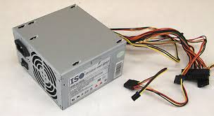

Power Supply
This lesson covers the functions, facts, connectors, and troubleshooting of power supplies.
Power Supply Functions
Power supplies perform the following functions:
- Convert alternating (AC) power to direct current (DC) power.
- Provide components with the correct levels of DC voltage (3.3V, 5V, 12V).
- Aid in thermal management by using a fan to cool the unit.
Power Supply Facts
- Power supplies should match the motherboard and case form factor (ATX, microATX).
- Modern power supplies automatically adjust to accept input voltages between 100 and 240 volts.
- Modular power supply units allow for better airflow and less clutter by detaching cables.
- Redundant power supplies are used in servers to ensure reliability if one unit fails.
Power Supply Connectors
Make sure the power supply has the necessary connectors for your components:
Connector
Description
24-pin (20+4 pin) ATX connector
Supplies power to the motherboard, with 4 additional pins for backward compatibility.
4-pin 12V Pentium 4 (P4) power
Provides two dedicated 12V wires to the CPU.
8-pin EPS12V CPU power
For modern processors requiring additional 12V power.
6+2-pin PCIe
Provides up to 150 watts of power to modern video cards.
4-pin peripheral power
Used for legacy components, such as IDE hard drives and optical drives.
SATA power
Powers SATA devices, providing 3.3V, 5V, and 12V.
4-pin mini-Molex
Powers floppy drives, providing 5V and 12V.
Troubleshooting Power Supplies
- Check for basic issues like unplugged power cords or incorrect voltage switch settings.
- Test voltage levels with a multimeter to ensure they are within +/- 5% of normal (12V rail: 11.4-12.6V, 5V rail: 4.7-5.25V, 3.3V rail: 3.1-3.4V).
- Never open or disassemble a power supply. Always replace the entire unit if it's malfunctioning.
- When replacing a power supply, ensure compatibility with your system’s form factor and connector requirements.